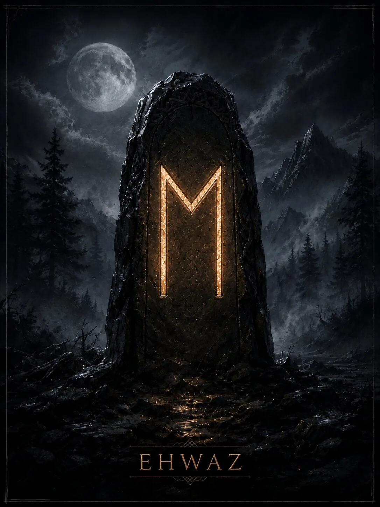

Руна движения через сотрудничество, доверие и согласованность двух сил. Её образ — не одинокая скорость, а связь всадника и коня: движение получается, когда стороны понимают друг друга.
Краткая суть
Руна движения через сотрудничество, доверие и согласованность двух сил. Её образ — не одинокая скорость, а связь всадника и коня: движение получается, когда стороны понимают друг друга.
Историческая традиция
Имя означает лошадь. Англосаксонская руническая традиция связывает Eoh с конём как источником радости и движения. Современная мантика развивает темы прогресса, партнёрства, поездки и быстрой перемены.
- Ключевые значения: лошадь, движение, доверие, партнёрство, прогресс, скорость, перемена, синергия
Современная мантика
Мантические значения относятся к современной рунической практике.
- Положительное проявление: Быстрый сдвиг, помощь партнёра, удачная поездка, прогресс благодаря взаимному доверию.
- Негативное проявление: Рассогласование, поспешность, зависимость от ненадёжного партнёра, движение без общей цели.
- Совет: Проверь, движетесь ли вы в одном направлении; скорость полезна только при согласованности.
- Предупреждение: Не пытайся управлять партнёром как инструментом: движение требует взаимного доверия.
- Итог ситуации: Быстрый прогресс, перемена места/условий, удачное сотрудничество.
Психологическое состояние
Готовность к изменению и сотрудничеству; в тени — беспокойство при любой паузе.
Духовное значение
Урок доверия и взаимного управления: настоящее движение не всегда строится на индивидуальном контроле.
Прямое и перевёрнутое положение
Мантическая трактовка и работа с перевёрнутыми положениями относятся к современной рунической практике. Для Старшего Футарка не сохранилось древнего руководства, которое задавало бы такой способ гадания как единственно правильный. Перевёрнутая Ehwaz в современных школах — задержка, разлад партнёров, неудачная поездка, поспешное изменение или потеря доверия.
Отличия трактовок разных школ
Исторический конь как основа прочен; «астральные путешествия» и магическое ускорение — поздние эзотерические применения.
Итог
Руна движения через сотрудничество, доверие и согласованность двух сил. Её образ — не одинокая скорость, а связь всадника и коня: движение получается, когда стороны понимают друг друга.
Финансы
движение денег через посредника или партнёра, быстрое изменение условий, сделки в дороге.
Работа
командный проект, смена должности, переход, логистика, ускорение процесса.
Отношения
взаимное доверие, развитие, совместные планы; в тени — один «везёт» другого.
Семья и быт
переезд, поездка, изменение привычного уклада при согласии участников.
Руна как характеристика человека
Подвижный, контактный, быстро адаптирующийся человек, умеющий работать в паре.
- Мысли: как быстрее продвинуться и с кем лучше объединиться.
- Чувства: доверие, интерес к совместному развитию, потребность в движении.
- Действия: предложит совместный шаг, поездку, смену условий или ускорение процесса.
Современное магическое значение
Это современная эзотерическая практика, а не исторически подтверждённая традиция.
- Современная магическая трактовка: ускорение, согласование участников, перемещение и прогресс.
- Задачи: поездки, переезд, командные проекты, ускорение дела, помощь посредников.
- Усиливает: динамику и синергию.
- Ослабляет: неподвижность и рассогласование.
- Риск: слишком быстро изменить ситуацию до того, как стороны готовы к перемене.
Руна в формулах и ставах
Ehwaz используют как ускоритель совместного движения: Ehwaz+Raidho — дорога/продвижение; Ehwaz+Gebo — партнёрство в движении; Ehwaz+Othala — переезд или изменение дома.
Эзотерическая трактовка
В современной эзотерической трактовке
В современной диагностике перевёрнутая Ehwaz может читаться как искусственная задержка, рассорка партнёров или нарушение движения.
Возможное бытовое объяснение
Альтернативное объяснение
Бытовая альтернатива: несогласованность участников, транспортные/логистические трудности, отсутствие доверия, неверный темп.
Характерные сочетания
- Ehwaz + Raidho: поездка, быстрое продвижение.
- Ehwaz + Gebo: надёжное сотрудничество.
- Ehwaz + Isa: срыв скорости, задержка.
Руна в формулах и ставах
Ehwaz используют как ускоритель совместного движения: Ehwaz+Raidho — дорога/продвижение; Ehwaz+Gebo — партнёрство в движении; Ehwaz+Othala — переезд или изменение дома.
Мантические, магические и диагностические значения относятся к современной рунической практике. Историческая часть опирается на рунические поэмы и эпиграфику. Материалы носят справочный и развлекательный характер.